- État d'avancement
- Prototype pleinement opérationnel, testé et validé sur la carte FPGA ainsi que sur l'écran soit en Casse Briques, soit en Pong (couvrant les tâches 0 à 4).
- Ma contribution
-
- Conception VHDL : contrôleur VGA (couleurs sur 4 bits), gestion des raquettes via encodeur rotatif, logique du jeu, obstacle mobile et compteur de score sur afficheurs 7 segments.
- Vérification : simulation sous environnement VHDL et validation matérielle sur carte FPGA.
- Technologies utilisées
- Vivado 2018.3 VHDL Carte Basys 3 Écran TV Câble VGA vers HDMI
| Matériel & Périphériques | Architecture VHDL | Résultats & Validation |
|---|---|---|
|
|
|
Dans le cadre du mini-projet d'électronique numérique (UL3EE100 à Sorbonne Université), l'objectif était de concevoir et finaliser une console de jeux embarquée (SU-EE100) sur carte FPGA (Digilent Basys 3) à partir d'une architecture matérielle incomplète.
Le principal défi technique résidait dans la conception et la synchronisation en temps réel de plusieurs modules numériques en VHDL sous Vivado : génération des signaux vidéo VGA codés sur 4 bits par couleur (4096 teintes), décodage des signaux en quadrature d'un encodeur rotatif, gestion des états de jeu (victoire, défaite, pause) via des machines à états (MAE) et intégration d'un obstacle mobile.
Globalement, l'architecture acquiert les commandes du joueur depuis les périphériques externes (encodeur rotatif, accéléromètre et boutons de la carte), exécute la logique des jeux Pong et Casse-Briques au coeur du FPGA, puis génère l'affichage vidéo en direct sur écran TV tout en actualisant le score sur les afficheurs 7 segments.
01 — Architecture générale et base temporelle (Tâche 0)
La console SU-EE100 repose sur une architecture numérique modulaire décrite en VHDL et implémentée sur une carte FPGA Digilent Basys 3 (oscillateur interne à 100 MHz). L'ensemble du système s'articule autour de trois blocs principaux : l'acquisition des commandes (encodeur rotatif, accéléromètre, boutons, interrupteurs), le moteur de jeu (machines à états et gestion des collisions) et l'affichage en temps réel (contrôleur VGA et afficheurs 7 segments).
Diviseur d'horloge (100 MHz → 25 MHz) :
L'affichage vidéo au format VGA (640×480 à 60 Hz) exige une
fréquence pixel précise de 25 MHz. J'ai corrigé et
simulé le module ClkDiv.vhd basé sur un compteur modulo
2 afin d'obtenir un rapport cyclique de 50 % et un facteur de
division exact de 4.
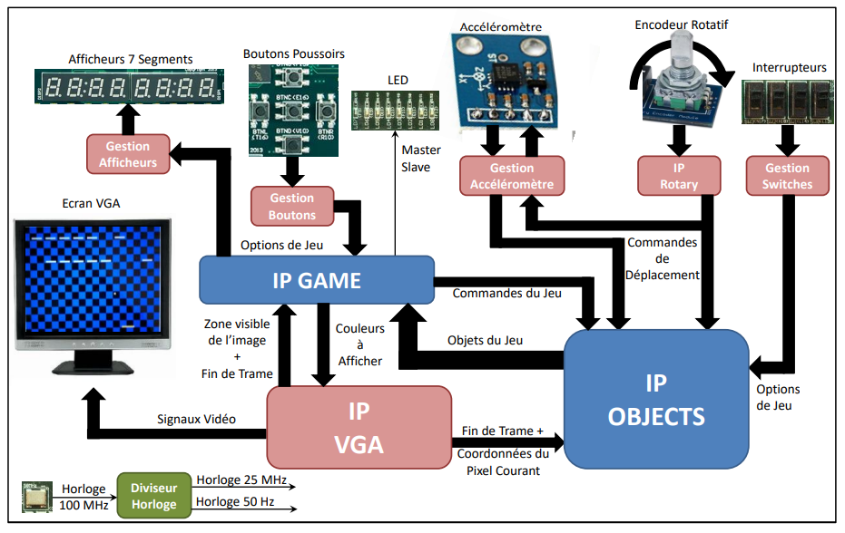
library IEEE;
use IEEE.STD_LOGIC_1164.ALL;
use IEEE.STD_LOGIC_UNSIGNED.ALL;
entity ClkDiv is
Port ( clk100, reset : in STD_LOGIC; -- Horloge 100 MHz et Reset Asynchrone
clk25 : out STD_LOGIC -- Horloge 25 MHz
);
end ClkDiv;
architecture Behavioral of ClkDiv is
-- Compteur pour le Facteur de Division de l'Horloge 100 MHz
signal CPT_25M : std_logic_vector(1 downto 0);
-- Signal Interne de l'Horloge 25 MHz
signal clk_int : std_logic;
begin
-- Affectation Horloge 25 MHz en Sortie
clk25 <= clk_int;
---------------------------------------------------------------
-- GESTION DU COMPTEUR DE DIVISION
-- ET GENERATION DE L'HORLOGE 25 MHz
---------------------------------------------------------------
process(clk100, reset)
begin
-- Reset Asynchrone
if reset = '0' then
CPT_25M <= "00";
clk_int <= '0';
-- Sinon Test Front d'Horloge
elsif rising_edge(clk100) then
-- Incrémentation du Compteur de Division
CPT_25M <= CPT_25M + 1;
-- Si la Valeur Limite Est Atteinte
if CPT_25M = "01" then
-- RAZ Compteur et Changement Etat Horloge 25 MHz
CPT_25M <= "00";
clk_int <= not clk_int;
end if;
end if;
end process;
end Behavioral;02 — Tâche 1 : Contrôleur VGA 4 bits et générateur de couleurs
Extension graphique : La version initiale de la
console limitait l'affichage à 3 bits (8 couleurs). J'ai étendu le
contrôleur VGA (VGA_4bits.vhd) sur
4 bits par couleur primaire, offrant une palette de
4096 teintes.
J'ai ensuite développé le module
Moving_Colors.vhd combinant un diviseur d'horloge à
20 Hz, trois compteurs 5 bits et une
Machine à États Finis (MAE) à 3 phases pour générer
un dégradé de couleurs dynamique.
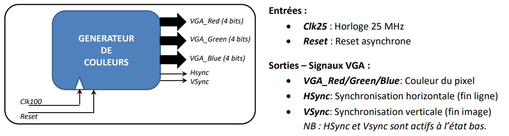
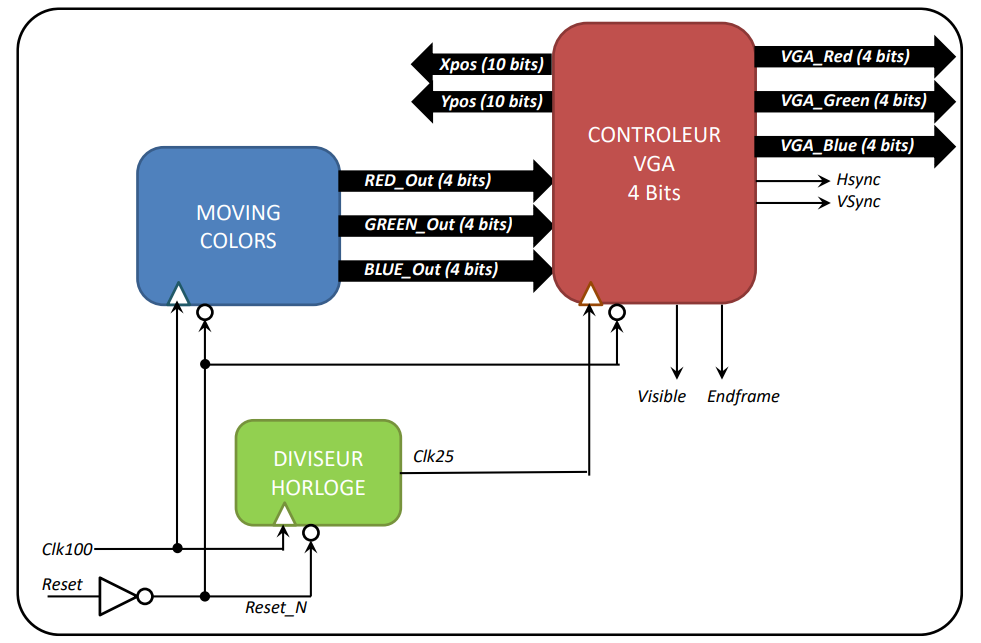
Generateur_De_Couleurs.
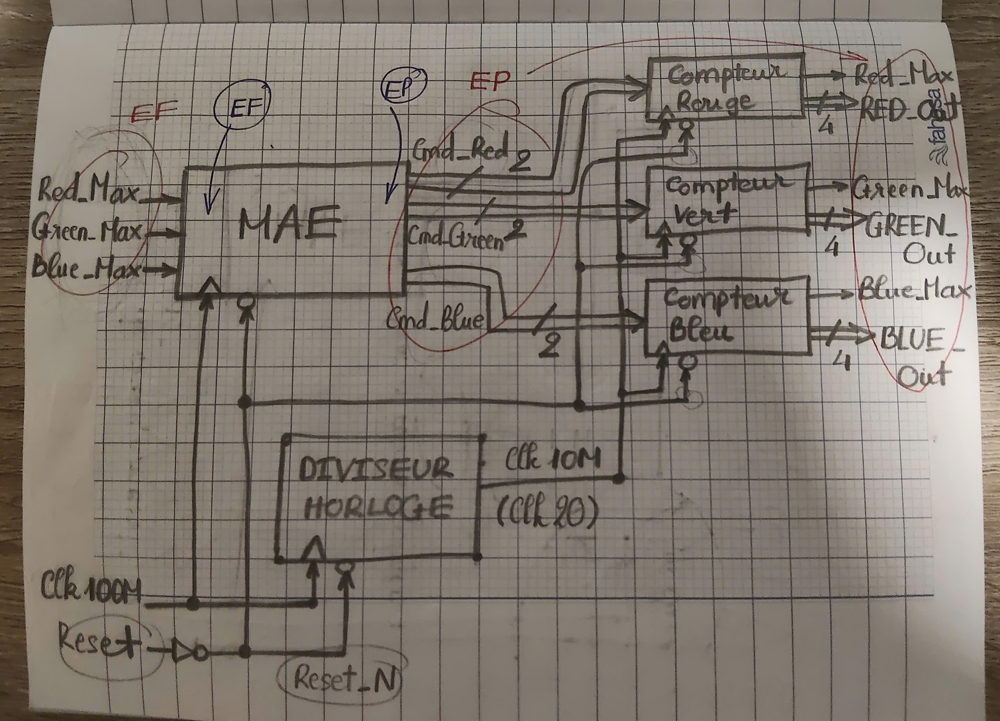
Moving_Colors.
Moving_Colors et
variation dynamique des teintes sur écran TV.
Moving_Colors sur écran
avec console de jeux.
library ieee;
use ieee.std_logic_1164.all;
use ieee.std_logic_unsigned.all;
entity Compteurs_5bits is
generic (
INIT_VALUE : std_logic_vector(4 downto 0) := "00000"
);
port (
CLK : in std_logic;
RESET : in std_logic;
Cmd : in std_logic_vector(1 downto 0);
S : out std_logic_vector(3 downto 0);
Max : out std_logic
);
end Compteurs_5bits;
architecture archi of Compteurs_5bits is
signal cpt : std_logic_vector(4 downto 0);
begin
S <= cpt(4 downto 1);
Max <= '1' when cpt = "11111" else '0';
process(CLK, RESET)
begin
if RESET = '0' then
cpt <= INIT_VALUE;
elsif rising_edge(CLK) then
case Cmd is
when "01" => cpt <= cpt - 1;
when "10" => cpt <= cpt + 1;
when others => cpt <= cpt;
end case;
end if;
end process;
end archi;library ieee;
use ieee.std_logic_1164.all;
use ieee.std_logic_unsigned.all;
entity MAE_Moving is
port (
RED_MAX, BLUE_MAX, GREEN_MAX : in std_logic;
CLK_100M, RESET : in std_logic;
CMD_RED, CMD_BLUE, CMD_GREEN : out std_logic_vector(1 downto 0)
);
end MAE_Moving;
architecture archi of MAE_Moving is
-- DÉFINITION DES ÉTATS
type ETAT is (P1, P2, P3);
-- DÉFINITION DE L'ÉTAT FUTUR ET PRÉSENT
signal EF, EP : ETAT;
begin
-- PROCESS POUR LE REGISTRE D'ÉTAT
process(CLK_100M, RESET)
begin
if RESET = '0' then
EP <= P1;
elsif rising_edge(CLK_100M) then
EP <= EF;
end if;
end process;
-- PROCESS POUR LE COMBINATOIRE D'ÉTATS
process(EP, RED_MAX, BLUE_MAX, GREEN_MAX)
begin
case EP is
when P1 =>
if GREEN_MAX = '1' then
EF <= P2;
else
EF <= P1;
end if;
when P2 =>
if BLUE_MAX = '1' then
EF <= P3;
else
EF <= P2;
end if;
when P3 =>
if RED_MAX = '1' then
EF <= P1;
else
EF <= P3;
end if;
end case;
end process;
-- PROCESS POUR LE COMBINATOIRE DE SORTIES
process(EP)
begin
case EP is
-- CSTE: "00", "11" | INC: "10" | DEC: "01"
when P1 =>
CMD_RED <= "01";
CMD_BLUE <= "00";
CMD_GREEN <= "10";
when P2 =>
CMD_RED <= "00";
CMD_BLUE <= "10";
CMD_GREEN <= "01";
when P3 =>
CMD_RED <= "10";
CMD_BLUE <= "01";
CMD_GREEN <= "00";
end case;
end process;
end archi;library ieee;
use ieee.std_logic_1164.all;
use ieee.std_logic_unsigned.all;
entity DivHorloge is
generic (
DIV_VALUE : integer := 5
);
port (
CLK_100M, RESET : in std_logic;
CLK_DIV : out std_logic
);
end DivHorloge;
architecture archi of DivHorloge is
signal cpt : integer range 0 to DIV_VALUE;
signal CLK_TMP : std_logic;
begin
CLK_DIV <= CLK_TMP;
process(CLK_100M, RESET)
begin
if RESET = '0' then
cpt <= 0;
CLK_TMP <= '0';
elsif rising_edge(CLK_100M) then
cpt <= cpt + 1;
if cpt = DIV_VALUE - 1 then
CLK_TMP <= not(CLK_TMP);
cpt <= 0;
end if;
end if;
end process;
end archi;library ieee;
use ieee.std_logic_1164.all;
use ieee.std_logic_unsigned.all;
entity Moving_Colors is
port ( CLK_100M, RESET : in std_logic;
RED_Out : out std_logic_vector(3 downto 0);
GREEN_Out : out std_logic_vector(3 downto 0);
BLUE_Out : out std_logic_vector(3 downto 0)
);
end Moving_Colors;
architecture archi of Moving_Colors is
signal CLK_INT : std_logic;
signal CMD_RED, CMD_BLUE, CMD_GREEN : std_logic_vector(1 downto 0);
signal RED_MAX, BLUE_MAX, GREEN_MAX : std_logic;
begin
Diviseur_20Hz: entity work.DivHorloge
generic map (
DIV_VALUE => 2500000
)
port map (
CLK_100M => CLK_100M,
RESET => RESET,
CLK_DIV => CLK_INT
);
Compteur_RED: entity work.Compteurs_5bits
generic map (
INIT_VALUE => "11111"
)
port map (
CLK => CLK_INT,
RESET => RESET,
Cmd => CMD_RED,
S => RED_Out,
Max => RED_MAX
);
Compteur_BLUE: entity work.Compteurs_5bits
port map (
CLK => CLK_INT,
RESET => RESET,
Cmd => CMD_BLUE,
S => BLUE_Out,
Max => BLUE_MAX
);
Compteur_GREEN: entity work.Compteurs_5bits
port map (
CLK => CLK_INT,
RESET => RESET,
Cmd => CMD_GREEN,
S => GREEN_Out,
Max => GREEN_MAX
);
MAE: entity work.MAE_Moving
port map (
RED_MAX => RED_MAX,
BLUE_MAX => BLUE_MAX,
GREEN_MAX => GREEN_MAX,
RESET => RESET,
CLK_100M => CLK_100M,
CMD_RED => CMD_RED,
CMD_BLUE => CMD_BLUE,
CMD_GREEN => CMD_GREEN
);
end archi;library ieee;
use ieee.std_logic_1164.all;
use ieee.std_logic_unsigned.all;
entity VGA_4bits is
port (
clk25, reset : in std_logic; -- Horloge, Reset Asynchrone
r, g, b : in std_logic_vector(3 downto 0); -- Commande de Couleur Donnee par le Controleur de Jeu
red, green, blue : out std_logic_vector(3 downto 0); -- Affichage Couleur vers Ecran VGA
hsync, vsync : out std_logic; -- Synchro Ligne (H) et Trame (V)
visible : out std_logic; -- Partie Visible de l'Image
endframe : out std_logic; -- Dernier Pixel Visible d'une Frame
xpos, ypos : out std_logic_vector(9 downto 0) -- Coordonnees du Pixel Courant
);
end VGA_4bits;
architecture archi of VGA_4bits is
-- Compteur Coordonnees Pixel
signal xcord, ycord : std_logic_vector(9 downto 0);
-- Signal de Fin de Ligne
signal endline : std_logic;
-- Signal Zone Visible de l'Image
signal image_visible : std_logic;
begin
-- Affichage Couleur
red <= r when image_visible = '1' else (others => '0');
green <= g when image_visible = '1' else (others => '0');
blue <= b when image_visible = '1' else (others => '0');
-- Affectation en Sortie des Coordonnees Pixel
xpos <= xcord;
ypos <= ycord;
-- Partie Visible de l'Image (Matrice 640 Colonnes x 480 Lignes)
image_visible <= '1' when (xcord < 640) and (ycord < 480) else '0';
visible <= image_visible;
-- Signal de Fin de Ligne (Partie Visible + Non Visible)
endline <= '1' when xcord = 799 else '0';
-- Fin de Trame (Dernier Pixel Visible de l'Image)
endframe <= '1' when (xcord = 0) and (ycord = 480) else '0';
-------------------------------------------------------------------------
-- COMPTEURS LIGNE ET COLONNE
-------------------------------------------------------------------------
process(clk25, reset)
begin
if reset = '0' then
xcord <= (others => '0');
ycord <= (others => '0');
elsif rising_edge(clk25) then
-- Incrementation Compteur Colonne
xcord <= xcord + 1;
-- Si on Arrive en Fin de Ligne
if (endline = '1') then
-- RAZ Compteur Colonne
xcord <= (others => '0');
-- Incrementation Compteur Ligne (RAZ apres 521 Lignes)
if (ycord = 520) then
ycord <= (others => '0');
else
ycord <= ycord + 1;
end if;
end if;
end if;
end process;
-------------------------------------------------------------------------
-- GENERATION DES SIGNAUX DE SYNCHRO
--
-- SYNCHRO LIGNE (HSYNC)
-- Colonne 0 --> 639 : Partie Visible
-- Colonne 640 --> 664 : Pre-Synchro
-- Colonne 665 --> 759 : Synchro
-- Colonne 760 --> 799 : Post-Synchro
--
-- SYNCHRO TRAME (VSYNC)
-- Ligne 0 --> 479 : Partie Visible
-- Ligne 480 --> 489 : Pre-Synchro
-- Ligne 490 --> 491 : Synchro
-- Ligne 492 --> 520 : Post-Synchro
-------------------------------------------------------------------------
process(clk25, reset)
begin
if reset = '0' then
hsync <= '1';
vsync <= '1';
elsif rising_edge(clk25) then
-- Synchro Ligne
if (xcord > 664) and (xcord <= 759) then
hsync <= '0';
else
hsync <= '1';
end if;
-- Synchro Trame
if (ycord = 490) or (ycord = 491) then
vsync <= '0';
else
vsync <= '1';
end if;
end if;
end process;
end archi;03 — Tâche 2 : Pilotage des raquettes via encodeur rotatif
Décodage en quadrature : Pour contrôler les
raquettes, j'ai conçu le sous-module move.vhd au sein
de l'IP ip_rotary. Après filtrage anti-rebond des
signaux de l'encodeur (QA et QB), la
machine à états analyse leur déphasage : si QA commute
avant QB, une impulsion Rot_Left est
générée ; dans le cas inverse, Rot_Right est activé.
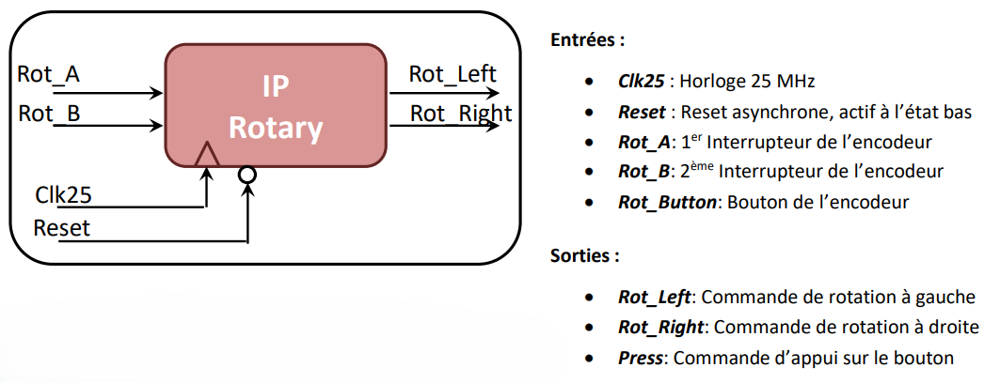
Move.
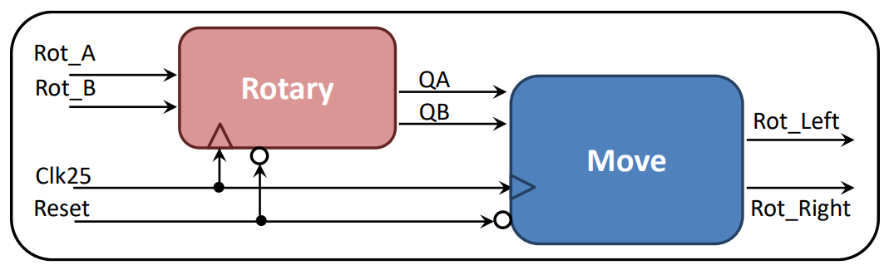
IP_Rotary.
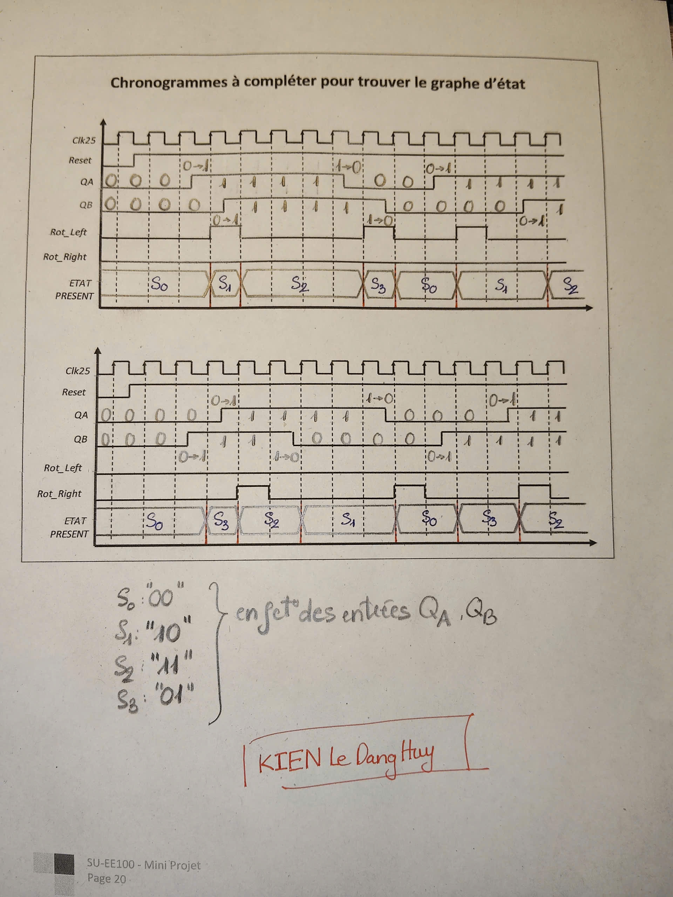
Move
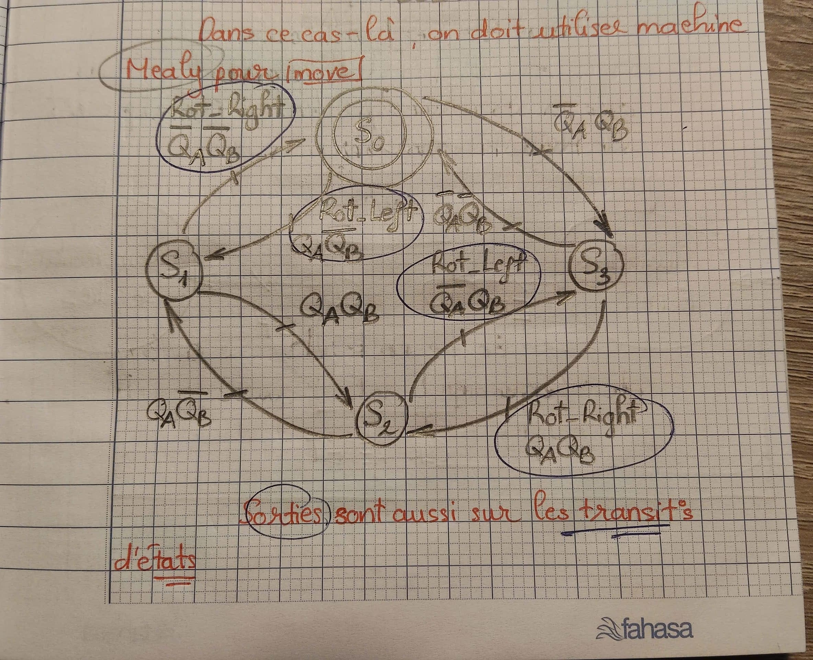
Move et détection
du sens de rotation.
Move ou
IP_Rotary sur écran avec console de jeux.
Move ou IP_Rotary sur
écran avec Encodeur Rotatif.
library ieee;
use ieee.std_logic_1164.all;
use ieee.std_logic_unsigned.all;
entity move is
port (
CLK_25M, RESET : in std_logic;
QA, QB : in std_logic;
Rot_Left, Rot_Right : out std_logic
);
end move;
architecture archi of move is
-- DÉFINITION DES ÉTATS
type ETAT is (S0, S1, S2, S3);
-- DÉFINITION DE L'ÉTAT FUTUR ET PRÉSENT
signal EF, EP : ETAT;
begin
-- PROCESS POUR LE REGISTRE D'ÉTAT
process(CLK_25M, RESET)
begin
if RESET = '0' then
EP <= S0;
elsif rising_edge(CLK_25M) then
EP <= EF;
end if;
end process;
-- PROCESS POUR LE COMBINATOIRE D'ÉTATS
process(EP, QA, QB)
begin
case EP is
when S0 =>
if QA = '1' and QB = '0' then
EF <= S1;
elsif QA = '0' and QB = '1' then
EF <= S3;
else
EF <= S0;
end if;
when S1 =>
if QA = '1' and QB = '1' then
EF <= S2;
elsif QA = '0' and QB = '0' then
EF <= S0;
else
EF <= S1;
end if;
when S2 =>
if QA = '0' and QB = '1' then
EF <= S3;
elsif QA = '1' and QB = '0' then
EF <= S1;
else
EF <= S2;
end if;
when S3 =>
if QA = '0' and QB = '0' then
EF <= S0;
elsif QA = '1' and QB = '1' then
EF <= S2;
else
EF <= S3;
end if;
end case;
end process;
-- PROCESS POUR LE SORTIE SYNCHRONE (MEALY ENREGISTRÉE)
process(CLK_25M, RESET)
begin
if RESET = '0' then
Rot_Left <= '0';
Rot_Right <= '0';
elsif rising_edge(CLK_25M) then
-- Valeurs par défaut
Rot_Left <= '0';
Rot_Right <= '0';
case EP is
-- S0 -> S1 : ROTATION GAUCHE
when S0 =>
if QA = '1' and QB = '0' then
Rot_Left <= '1';
end if;
-- S1 -> S0 : ROTATION DROITE
when S1 =>
if QA = '0' and QB = '0' then
Rot_Right <= '1';
end if;
-- S2 -> S3 : ROTATION GAUCHE
when S2 =>
if QA = '0' and QB = '1' then
Rot_Left <= '1';
end if;
-- S3 -> S2 : ROTATION DROITE
when S3 =>
if QA = '1' and QB = '1' then
Rot_Right <= '1';
end if;
end case;
end if;
end process;
end archi;04 — Tâche 3 : Gestion des parties et mode Pause (Module Mode)
Orchestration des parties : J'ai développé le
module mode.vhd intégrant trois sous-blocs synchronisés
à 25 MHz :
- Tempo Pause (compteur 10 bits) : Anti-rebond du bouton poussoir de l'encodeur pour un basculement unique Pause/Actif.
-
Timer Lost (compteur 6 bits) : Maintien de
l'écran rouge (
Game_Lost) pendant 64 images lorsque la balle sort du terrain. -
MAE de contrôle : Gestion des transitions de jeu
et activation de l'écran vert (
Brick_Win) lorsque toutes les briques sont détruites.
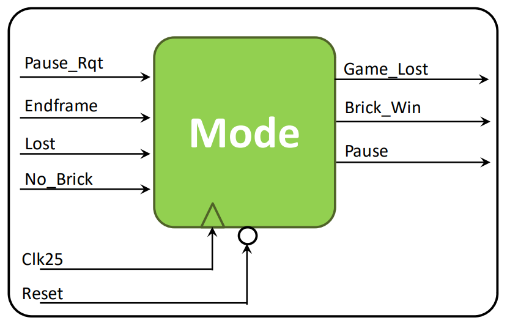
Mode.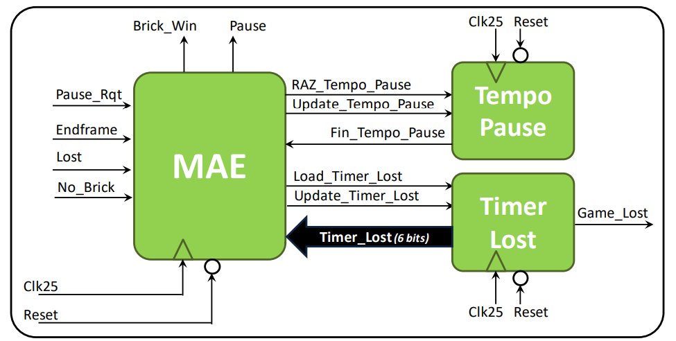
Mode (MAE,
Tempo_Pause et Timer_Lost).
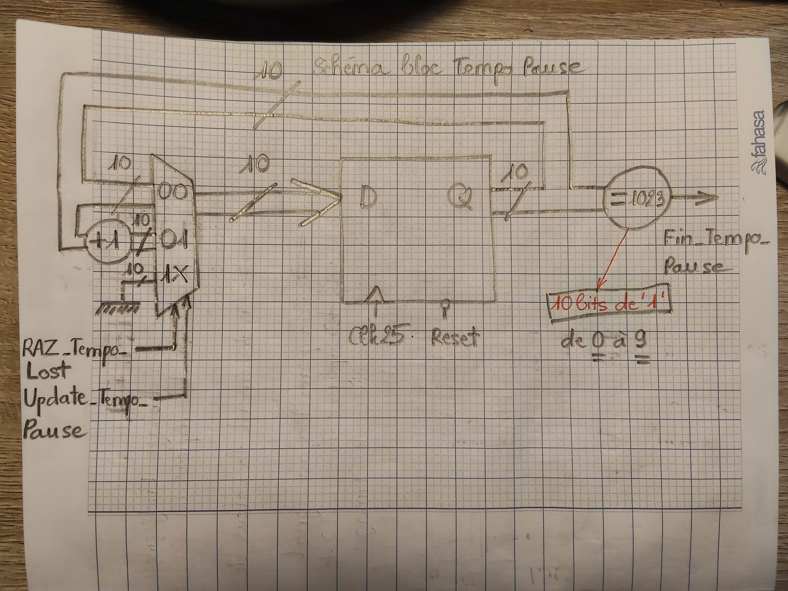
Tempo_Pause.
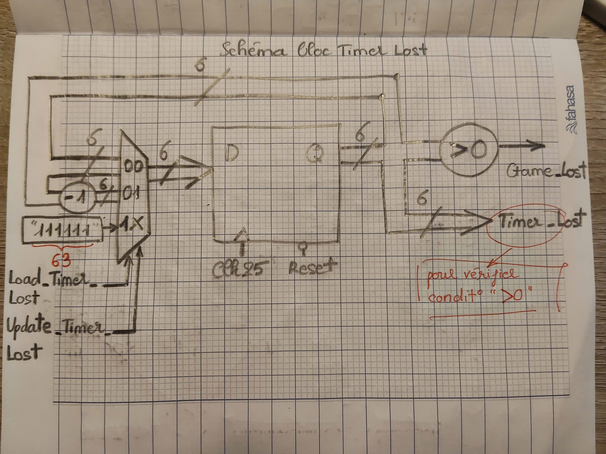
Timer_Lost.
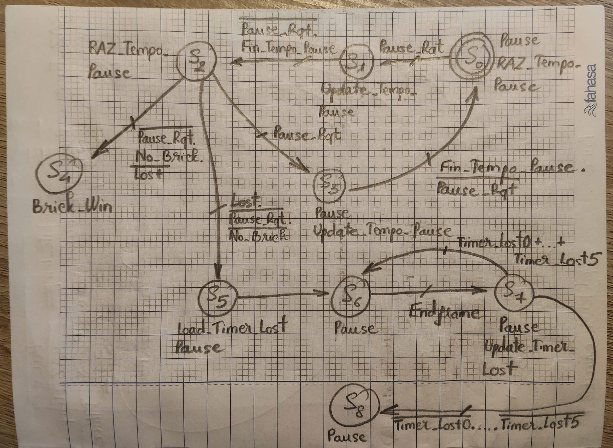
MAE_Mode.
library ieee;
use ieee.std_logic_1164.all;
use ieee.std_logic_unsigned.all;
entity Tempo_Pause is
port (
CLK_25M, RESET : in std_logic;
RAZ_Tempo_Pause, Update_Tempo_Pause : in std_logic;
Fin_Tempo_Pause : out std_logic
);
end Tempo_Pause;
architecture archi of Tempo_Pause is
signal cpt : std_logic_vector(9 downto 0);
begin
Fin_Tempo_Pause <= '1' when cpt = "1111111111" else '0';
process(CLK_25M, RESET)
begin
if RESET = '0' then
cpt <= (others => '0');
elsif rising_edge(CLK_25M) then
if RAZ_Tempo_Pause = '1' then
cpt <= (others => '0');
elsif Update_Tempo_Pause = '1' then
cpt <= cpt + 1;
else
cpt <= cpt;
end if;
end if;
end process;
end archi;library ieee;
use ieee.std_logic_1164.all;
use ieee.std_logic_unsigned.all;
entity Timer_Lost is
port (
CLK_25M, RESET : in std_logic;
Load_Timer_Lost, Update_Timer_Lost : in std_logic;
Game_Lost : out std_logic;
Timer_Lost : out std_logic_vector(5 downto 0)
);
end Timer_Lost;
architecture archi of Timer_Lost is
signal cpt : std_logic_vector(5 downto 0);
begin
Timer_Lost <= cpt;
Game_Lost <= '1' when cpt > 0 else '0';
process(CLK_25M, RESET)
begin
if RESET = '0' then
cpt <= (others => '0');
elsif rising_edge(CLK_25M) then
if Load_Timer_Lost = '1' then
cpt <= "111111";
elsif Update_Timer_Lost = '1' then
cpt <= cpt - 1;
else
cpt <= cpt;
end if;
end if;
end process;
end archi;library ieee;
use ieee.std_logic_1164.all;
use ieee.std_logic_unsigned.all;
entity MAE_Mode is
port (
CLK_25M, RESET : in std_logic;
Pause_Rqt, Endframe, Lost, No_Brick, Fin_Tempo_Pause : in std_logic;
Timer_Lost : in std_logic_vector(5 downto 0);
Brick_Win, Pause : out std_logic;
RAZ_Tempo_Pause, Update_Tempo_Pause, Load_Timer_Lost, Update_Timer_Lost : out std_logic
);
end MAE_Mode;
architecture archi of MAE_Mode is
-- DÉFINITION DES ÉTATS
type ETAT is (S0, S1, S2, S3, S4, S5, S6, S7, S8);
-- DÉFINITION DE L'ÉTAT FUTUR ET PRÉSENT
signal EF, EP : ETAT;
begin
-- PROCESS POUR LE REGISTRE D'ÉTAT
process(CLK_25M, RESET)
begin
if RESET = '0' then
EP <= S0;
elsif rising_edge(CLK_25M) then
EP <= EF;
end if;
end process;
-- PROCESS POUR LE COMBINATOIRE D'ÉTATS
process(EP, Pause_Rqt, Endframe, Lost, No_Brick, Fin_Tempo_Pause, Timer_Lost)
begin
case EP is
when S0 =>
if Pause_Rqt = '1' then
EF <= S1;
else
EF <= S0;
end if;
when S1 =>
if Fin_Tempo_Pause = '1' and Pause_Rqt = '0' then
EF <= S2;
else
EF <= S1;
end if;
when S2 =>
if Pause_Rqt = '1' then
EF <= S3;
elsif No_Brick = '1' and Lost = '0' then
EF <= S4;
elsif Lost = '1' and No_Brick = '0' then
EF <= S5;
else
EF <= S2;
end if;
when S3 =>
if Fin_Tempo_Pause = '1' and Pause_Rqt = '0' then
EF <= S0;
else
EF <= S3;
end if;
when S4 =>
EF <= S4;
when S5 =>
EF <= S6;
when S6 =>
if Endframe = '1' then
EF <= S7;
else
EF <= S6;
end if;
when S7 =>
if Timer_Lost = "000000" then
EF <= S8;
else
EF <= S6;
end if;
when S8 =>
EF <= S8;
end case;
end process;
-- PROCESS POUR LE COMBINATOIRE DE SORTIES
process(EP, Timer_Lost)
begin
-- VALEURS PAR DÉFAUT
Pause <= '0';
RAZ_Tempo_Pause <= '0';
Brick_Win <= '0';
Update_Tempo_Pause <= '0';
Load_Timer_Lost <= '0';
Update_Timer_Lost <= '0';
case EP is
when S0 =>
Pause <= '1';
RAZ_Tempo_Pause <= '1';
when S1 =>
Update_Tempo_Pause <= '1';
when S2 =>
RAZ_Tempo_Pause <= '1';
when S3 =>
Pause <= '1';
Update_Tempo_Pause <= '1';
when S4 =>
Brick_Win <= '1';
when S5 =>
Load_Timer_Lost <= '1';
Pause <= '1';
when S6 =>
Pause <= '1';
when S7 =>
Pause <= '1';
if Timer_Lost /= "000000" then
Update_Timer_Lost <= '1';
end if;
when S8 =>
Pause <= '1';
end case;
end process;
end archi;library ieee;
use ieee.std_logic_1164.all;
use ieee.std_logic_unsigned.all;
entity mode is
port (
CLK_25M, RESET : in std_logic;
Pause_Rqt, Endframe, Lost, No_Brick : in std_logic;
Game_Lost, Brick_Win, Pause : out std_logic
);
end mode;
architecture archi of mode is
signal RAZ_Tempo_Pause, Update_Tempo_Pause, Fin_Tempo_Pause : std_logic;
signal Load_Timer_Lost, Update_Timer_Lost : std_logic;
signal Timer_Lost : std_logic_vector(5 downto 0);
begin
Tempo_Pause_Compteur: entity work.Tempo_Pause
port map (
CLK_25M => CLK_25M,
RESET => RESET,
RAZ_Tempo_Pause => RAZ_Tempo_Pause,
Update_Tempo_Pause => Update_Tempo_Pause,
Fin_Tempo_Pause => Fin_Tempo_Pause
);
Timer_Lost_Compteur: entity work.Timer_Lost
port map (
CLK_25M => CLK_25M,
RESET => RESET,
Load_Timer_Lost => Load_Timer_Lost,
Update_Timer_Lost => Update_Timer_Lost,
Game_Lost => Game_Lost,
Timer_Lost => Timer_Lost
);
MAE: entity work.MAE_Mode
port map (
CLK_25M => CLK_25M,
RESET => RESET,
Pause_Rqt => Pause_Rqt,
Endframe => Endframe,
Lost => Lost,
No_Brick => No_Brick,
Fin_Tempo_Pause => Fin_Tempo_Pause,
Timer_Lost => Timer_Lost,
Brick_Win => Brick_Win,
Pause => Pause,
RAZ_Tempo_Pause => RAZ_Tempo_Pause,
Update_Tempo_Pause => Update_Tempo_Pause,
Load_Timer_Lost => Load_Timer_Lost,
Update_Timer_Lost => Update_Timer_Lost
);
end archi;05 — Tâche 4 & Amélioration : Obstacle mobile et compteur de score
Obstacle mobile (decor.vhd) :
Implémentation d'une barre horizontale de 100×8 pixels au
centre de l'écran (activable via S1), se déplaçant de 2
pixels par image avec inversion automatique du sens au contact des
parois latérales.
Compteur de points sur afficheurs 7 segments : Ajout d'un compteur s'incrémentant à chaque brique détruite et pilotant directement les afficheurs 7 segments de la carte Basys 3 en temps réel.
library IEEE;
use IEEE.STD_LOGIC_1164.ALL;
use IEEE.STD_LOGIC_UNSIGNED.ALL;
entity decor is
Port (
clk25 : in STD_LOGIC; -- Horloge 25 MHz
reset : in STD_LOGIC; -- Reset Asynchrone
-- INDICATIONS D'AFFICHAGE DES PIXELS
endframe : in STD_LOGIC; -- Fin de l'Image Visible
xpos : in STD_LOGIC_VECTOR (9 downto 0); -- Coordonnee X du Pixel Courant
ypos : in STD_LOGIC_VECTOR (9 downto 0); -- Coordonnee Y du Pixel Courant
-- PARAMETRES DE JEU
game_type : in STD_LOGIC; -- Type de Jeu
obstacle : in STD_LOGIC; -- Parametre Obstacle
-- ELEMENTS DE DECOR
bluebox : out STD_LOGIC; -- Pixel Courant = Case Bleue
left : out STD_LOGIC; -- Pixel Courant = Gauche de l'Ecran
right : out STD_LOGIC; -- Pixel Courant = Droite de l'Ecran
bottom : out STD_LOGIC; -- Pixel Courant = Bas de l'Ecran
barrier : out std_logic; -- Pixel Courant = Obstacle (Jeu Casse Briques)
wall_top : out STD_LOGIC; -- Pixel Courant = Mur du Haut
wall_bottom : out STD_LOGIC; -- Pixel Courant = Mur du Bas
wall_left : out STD_LOGIC; -- Pixel Courant = Mur de Gauche
wall_right : out STD_LOGIC; -- Pixel Courant = Mur de Droite
wall_pong : out STD_LOGIC; -- Pixel Courant = Mur Jeu Pong
wall_brick : out STD_LOGIC -- Pixel Courant = Mur Jeu Casse Briques
);
end decor;
architecture Behavioral of decor is
signal ybarrier : std_logic; -- Coordonnees Y du Pixel dans la Zone de l'Obstacle
signal xbarrier : std_logic_vector(9 downto 0); -- Coordonnees en X de l'Obstacle
signal direction : std_logic; -- Sens de Deplacement de l'Obstacle
begin
-------------------------------------------------------------------------------------------
-- GESTION DU DECOR
-- Damier Bleu et Noir de Fond d'Ecran
-- Generation des Murs (En Fonction du Jeu Choisi)
-- Signal de Bas de l'Ecran
-------------------------------------------------------------------------------------------
process(xpos, ypos, game_type)
begin
wall_pong <= '0';
wall_brick <= '0';
wall_left <= '0';
wall_right <= '0';
wall_top <= '0';
wall_bottom <= '0';
left <= '0';
right <= '0';
bottom <= '0';
bluebox <= '0';
-- Delimitation des Cases Bleues (Tous les 32x32 Pixels)
bluebox <= xpos(3) xor ypos(3);
-- Mur Haut (Present dans Pong et Casse Briques)
if (ypos < 4) then
wall_top <= '1'; wall_brick <= '1'; wall_pong <= '1';
end if;
-- Si on Joue au Casse Briques
if game_type = '0' then
-- Mur Gauche
if (xpos <= 4) then
wall_left <= '1'; wall_brick <= '1';
end if;
-- Mur Droit
if (xpos > 635) then
wall_right <= '1'; wall_brick <= '1';
end if;
-- Bas de l'ecran
if (ypos > 475) then
bottom <= '1';
end if;
-- Si on Joue a Pong
else
-- Mur du Bas
if (ypos > 475) then
wall_bottom <= '1'; wall_pong <= '1';
end if;
-- Bord Gauche de L'Ecran
if (xpos <= 4) then
left <= '1';
end if;
-- Bord Droit de l'Ecran
if (xpos > 635) then
right <= '1';
end if;
end if;
end process;
-------------------------------------------------------------------------------------------
-- GESTION DE L'OBSTACLE
-- Déplacement horizontal de l'obstacle
-------------------------------------------------------------------------------------------
process(clk25, reset)
begin
if reset = '0' then
xbarrier <= "0100001110"; -- x_debut = 270
direction <= '0'; -- '0' à droite, '1' à gauche
elsif rising_edge(clk25) then
if endframe = '1' then -- chaque image
if direction = '0' then
if xbarrier >= 536 then -- limite droite
direction <= '1';
else
xbarrier <= xbarrier + 2;
end if;
else
if xbarrier <= 6 then -- limite gauche
direction <= '0';
else
xbarrier <= xbarrier - 2;
end if;
end if;
end if;
end if;
end process;
-- Détection de la zone dans l'obstacle
ybarrier <= '1' when (ypos >= 236 and ypos < 244) else '0'; -- 8 pixels
-- Activation de la sortie barrier
barrier <= '1' when (game_type = '0' and obstacle = '1' and
ybarrier = '1' and xpos >= xbarrier and
xpos < (xbarrier + 100)) else '0';
end Behavioral;----------------------------------------------------------------------------------
-- Company: UPMC
-- Engineer: Julien Denoulet
--
-- Gestion des Rebonds
----------------------------------------------------------------------------------
library IEEE, work;
use IEEE.STD_LOGIC_1164.ALL;
use IEEE.STD_LOGIC_UNSIGNED.ALL;
use work.pong_pack.all;
entity bounce is
Port (
clk25 : in STD_LOGIC; -- Horloge
reset : in STD_LOGIC; -- Reset Asynchrone
endframe : in STD_LOGIC; -- Signal de Fin de l'Image Visible
game_type : in STD_LOGIC; -- Type de Jeu
-- OBJETS DU JEU
ball : in STD_LOGIC; -- Pixel Courant = Balle
pong_left : in std_logic; -- Pixel Appartient a la Raquette Gauche (Pong)
pong_right : in std_logic; -- Pixel Appartient a la Raquette Droite (Pong)
pad_far_left : in std_logic; -- Pixel Appartient a la Zone Extreme Gauche
pad_left : in std_logic; -- Pixel Appartient a la Zone Gauche
pad_center : in std_logic; -- Pixel Appartient a la Zone Centrale
pad_right : in std_logic; -- Pixel Appartient a la Zone Droite
pad_far_right : in std_logic; -- Pixel Appartient a la Zone Extreme Droite
wall_left : in STD_LOGIC; -- Pixel Courant = Mur Gauche
wall_right : in STD_LOGIC; -- Pixel Courant = Mur Droit
wall_top : in STD_LOGIC; -- Pixel Courant = Mur Haut
wall_bottom : in STD_LOGIC; -- Pixel Courant = Mur Bas
barrier : in std_logic; -- Pixel Courant = Obstacle (Pong)
brick : in tableau; -- Pixel Courant = Brique
-- GENERATION DES REBONDS
leftbounce : out STD_LOGIC; -- Rebond Mur Gauche
rightbounce : out STD_LOGIC; -- Rebond Mur Droit
ybounce : out STD_LOGIC; -- Rebond Brique ou Murs du Haut ou du Bas
barrier_bounce : out STD_LOGIC; -- Rebond Contre l'Obstacle
brick_bounce : out tableau; -- Rebond Contre une Brique
pong_left_bounce : out STD_LOGIC; -- Rebond Contre Raquette Gauche (Pong)
pong_right_bounce : out STD_LOGIC; -- Rebond Contre Raquette Droite (Pong)
pad_far_left_bounce : out STD_LOGIC; -- Rebond Contre Partie Extreme Gauche de Raquette
pad_left_bounce : out STD_LOGIC; -- Rebond Contre Partie Gauche de Raquette
pad_center_bounce : out STD_LOGIC; -- Rebond Contre Partie Centrale de Raquette
pad_right_bounce : out STD_LOGIC; -- Rebond Contre Partie Droite de Raquette
pad_far_right_bounce : out STD_LOGIC; -- Rebond Contre Partie Extreme Droite de Raquette
Brick_Break : out std_logic -- Signal de compteur de points *HUY*
);
end bounce;
architecture Behavioral of bounce is
signal brick_scored : tableau;
begin
-- GESTION DES REBONDS
process(clk25, reset)
begin
-- Au Reset, pas de Rebond sur les Murs, la Raquette ou les Briques
if reset = '0' then
leftbounce <= '0';
rightbounce <= '0';
Brick_Break <= '0'; -- Signal de compteur de points *HUY*
ybounce <= '0';
pad_far_left_bounce <= '0';
pad_left_bounce <= '0';
pad_center_bounce <= '0';
pad_right_bounce <= '0';
pad_far_right_bounce <= '0';
pong_left_bounce <= '0';
pong_right_bounce <= '0';
barrier_bounce <= '0';
for i in 0 to 1 loop -- *HUY*
for j in 0 to 8 loop
brick_scored(i)(j) <= '0';
end loop;
end loop; -- *HUY*
for i in 0 to 1 loop
for j in 0 to 8 loop
brick_bounce(i)(j) <= '0';
end loop;
end loop;
elsif rising_edge(clk25) then
Brick_Break <= '0'; -- Signal de compteur de points *HUY*
-- Si on n'Est pas a la Fin de l'Image
if endframe = '0' then
-- Si le Pixel Courant Appartient a la Balle...
if ball = '1' then
-- Collision avec le Mur Droit
if wall_right = '1' then
rightbounce <= '1';
end if;
-- Collision avec le Mur Gauche
if wall_left = '1' then
leftbounce <= '1';
end if;
-- Collision avec le Mur du Haut ou du Bas
if (wall_top or wall_bottom) = '1' then
ybounce <= '1';
end if;
-- Collision avec la Raquette Droite du Jeu Pong
if pong_right = '1' then
pong_right_bounce <= '1';
end if;
-- Collision avec la Raquette Gauche du Jeu Pong
if pong_left = '1' then
pong_left_bounce <= '1';
end if;
-- Collision avec la Zone Extreme Gauche de la Raquette Casse Briques
if pad_far_left = '1' then
pad_far_left_bounce <= '1';
end if;
-- Collision avec la Zone Gauche de la Raquette Casse Briques
if pad_left = '1' then
pad_left_bounce <= '1';
end if;
-- Collision avec la Zone Centrale de la Raquette Casse Briques
if pad_center = '1' then
pad_center_bounce <= '1';
end if;
-- Collision avec la Zone Droite de la Raquette Casse Briques
if pad_right = '1' then
pad_right_bounce <= '1';
end if;
-- Collision avec la Zone Extreme Droite de la Raquette Casse Briques
if pad_far_right = '1' then
pad_far_right_bounce <= '1';
end if;
-- Collision avec l'Obstacle
if barrier = '1' then
barrier_bounce <= '1';
end if;
-- Collision avec une Brique (Si le Jeu Est Bien Casse Briques)
if game_type = '0' then
for i in 0 to 1 loop
for j in 0 to 8 loop
if brick(i)(j) = '1' then
brick_bounce(i)(j) <= '1';
ybounce <= '1';
-- Compter chaque brique une seule fois *HUY*
if brick_scored(i)(j) = '0' then -- *HUY*
Brick_Break <= '1';
brick_scored(i)(j) <= '1'; -- *HUY*
end if;
end if;
end loop;
end loop;
end if;
end if;
-- Si on Est a la Fin de l'Image
else
-- Reinitialisation des Flags de Rebond
barrier_bounce <= '0';
leftbounce <= '0';
rightbounce <= '0';
ybounce <= '0';
pad_far_left_bounce <= '0';
pad_left_bounce <= '0';
pad_center_bounce <= '0';
pad_right_bounce <= '0';
pad_far_right_bounce <= '0';
pong_right_bounce <= '0';
pong_left_bounce <= '0';
end if;
end if;
end process;
end Behavioral;library ieee;
use ieee.std_logic_unsigned.all;
use ieee.std_logic_1164.all;
entity compteur_points is
port (
CLK_25M, RESET : in std_logic;
Brick_Break : in std_logic;
Points : out std_logic_vector(4 downto 0)
);
end compteur_points;
architecture archi of compteur_points is
signal cpt : std_logic_vector(4 downto 0);
begin
Points <= cpt;
process(CLK_25M, RESET)
begin
if RESET = '0' then
cpt <= (others => '0');
elsif rising_edge(CLK_25M) then
if Brick_Break = '1' then
cpt <= cpt + 1;
else
cpt <= cpt;
end if;
end if;
end process;
end archi;----------------------------------------------------------------------------------
-- Company: UPMC
-- Engineer: Julien Denoulet
--
-- Gestion des Objets du Jeu (Balle, Raquette, Briques, Decor)
----------------------------------------------------------------------------------
library IEEE;
use IEEE.STD_LOGIC_1164.ALL;
use IEEE.STD_LOGIC_UNSIGNED.ALL;
use work.pong_pack.ALL;
entity objects is
Port (
clk25 : in STD_LOGIC; -- Horloge 25 MHz
clk_acc : in std_logic; -- Horloge 25 Hz (Pour l'Accéléromètre)
reset : in STD_LOGIC; -- Reset Asynchrone
-- SIGNAUX DU CTRL VGA
endframe : in STD_LOGIC; -- Signal de Fin de l'Image Visible
xpos : in STD_LOGIC_VECTOR (9 downto 0); -- Coordonnee X du Pixel Courant
ypos : in STD_LOGIC_VECTOR (9 downto 0); -- Coordonnee Y du Pixel Courant
-- SIGNAUX ENCODEUR ROTATIF
own_left : in std_logic; -- Commande Deplacement Gauche Carte
own_right : in std_logic; -- Commande Deplacement Droite Carte
other_left : in std_logic; -- Commande Deplacement Gauche Autre Carte
other_right : in std_logic; -- Commande Deplacement Droite Autre Carte
-- MODES DU JEU
manette : in std_logic; -- Selection Manette (Encodeur / Accéléromètre)
game_type : in std_logic; -- Type de Jeu
taille : in std_logic; -- Paramètre Taille
speed : in STD_LOGIC; -- Vitesse du Jeu
obstacle : in std_logic; -- Presence d'un Obstacle (Pong)
pause : in std_logic; -- Commande Mode Pause
game_lost : in std_logic; -- Mode Echec
-- OBJETS CORRESPONDANT AU PIXEL COURANT
bluebox : out STD_LOGIC; -- Pixel Courant = Case Bleue
left : out STD_LOGIC; -- Pixel Courant = Gauche de l'Ecran
right : out STD_LOGIC; -- Pixel Courant = Droite de l'Ecran
bottom : out STD_LOGIC; -- Pixel Courant = Bas de l'Ecran
wall_pong : out STD_LOGIC; -- Pixel Courant = Mur pour Jeu Pong
wall_brick : out STD_LOGIC; -- Pixel Courant = Mur pour Jeu Casse Briques
barrier : out STD_LOGIC; -- Pixel Courant = Obstacle (Jeu Pong)
pad : out std_logic; -- Pixel Appartient a la Raquette
brick : out tableau; -- Pixel Courant = Brique
brick_bounce : out tableau; -- Rebond Contre une Brique
ball : out STD_LOGIC; -- Pixel Courant = Balle
Points : out std_logic_vector(4 downto 0) -- Points affichés *HUY*
);
end objects;
architecture Behavioral of objects is
-- OBJETS DU DECOR ET REBONDS ASSOCIES
signal wall_top : STD_LOGIC; -- Pixel Courant = Mur du Haut
signal wall_bottom : STD_LOGIC; -- Pixel Courant = Mur du Bas
signal wall_left : STD_LOGIC; -- Pixel Courant = Mur de Gauche
signal wall_right : STD_LOGIC; -- Pixel Courant = Mur de Droite
signal barrier_tmp : STD_LOGIC; -- Pixel Courant = Obstacle (Pong)
signal leftbounce : STD_LOGIC; -- Rebond Mur Gauche
signal rightbounce : STD_LOGIC; -- Rebond Mur Droit
signal ybounce : STD_LOGIC; -- Rebond Contre une Brique ou Mur du Haut ou du Bas
signal barrier_bounce : STD_LOGIC; -- Rebond Contre Obstacle
-- RAQUETTE DU JEU CASSE BRIQUES ET REBONDS ASSOCIES
signal pad_tmp : std_logic; -- Pixel Courant = Raquette
signal pad_far_left : std_logic; -- Pixel Courant = Zone Extreme Gauche Raquette
signal pad_left : std_logic; -- Pixel Courant = Zone Gauche Raquette
signal pad_center : std_logic; -- Pixel Courant = Zone Centrale Raquette
signal pad_right : std_logic; -- Pixel Courant = Zone Droite Raquette
signal pad_far_right : std_logic; -- Pixel Courant = Zone Extreme Droite Raquette
signal pad_far_left_bounce : STD_LOGIC; -- Rebond Contre Zone Extreme Gauche de Raquette
signal pad_left_bounce : STD_LOGIC; -- Rebond Contre Zone Gauche de Raquette
signal pad_center_bounce : STD_LOGIC; -- Rebond Contre Zone Centrale de Raquette
signal pad_right_bounce : STD_LOGIC; -- Rebond Contre Zone Droite de Raquette
signal pad_far_right_bounce : STD_LOGIC; -- Rebond Contre Zone Extreme Droite de Raquette
-- RAQUETTE DU JEU PONG ET REBONDS ASSOCIES
signal pong_left : std_logic; -- Pixel Courant = Raquette Gauche
signal pong_right : std_logic; -- Pixel Courant = Raquette Droite
signal pong_left_bounce : STD_LOGIC; -- Rebond Contre la Raquette Gauche
signal pong_right_bounce : STD_LOGIC; -- Rebond Contre la Raquette Droite
-- BRIQUES ET REBONDS ASSOCIES
signal brick_tmp : tableau; -- Position des Briques
signal brick_bounce_tmp : tableau; -- Rebond sur des Briques
signal Brick_Break_tmp : std_logic; -- Signal pour gagner un point *HUY*
-- BALLE
signal ball_tmp : std_logic; -- Pixel Courant = Balle
begin
-- GESTION DU DECOR
fond_ecran: entity work.decor
port map (
clk25 => clk25, -- Horloge
reset => reset, -- Reset Asynchrone
endframe => endframe, -- Signal Fin Image Visible
xpos => xpos, -- Coordonnee X du Pixel Courant
ypos => ypos, -- Coordonnee Y du Pixel Courant
game_type => game_type, -- Type de Jeu
obstacle => obstacle, -- Presence d'un Obstacle (Pong)
bluebox => bluebox, -- Pixel Courant = Case Bleue
left => left, -- Pixel Courant = Gauche de l'Ecran
right => right, -- Pixel Courant = Droite de l'Ecran
bottom => bottom, -- Pixel Courant = Bas de l'Ecran
barrier => barrier_tmp, -- Pixel Courant = Obstacle (Jeu Pong)
wall_top => wall_top, -- Pixel Courant = Mur du Haut
wall_left => wall_left, -- Pixel Courant = Mur de Gauche
wall_right => wall_right, -- Pixel Courant = Mur de Droite
wall_bottom => wall_bottom, -- Pixel Courant = Mur du Bas
wall_pong => wall_pong, -- Pixel Courant = Mur Jeu Pong
wall_brick => wall_brick -- Pixel Courant = Mur Jeu Casse Briques
);
barrier <= barrier_tmp;
----------------------------------------------------------------------
pad <= pad_tmp;
-- CONTROLEUR DE RAQUETTE
pad_ctrl: entity work.pad
port map (
clk25 => clk25, -- Horloge 25 MHz
clk_acc => clk_acc, -- Horloge 25 Hz
reset => reset, -- Reset Asynchrone
manette => manette, -- Selection Manette (Encodeur / Accéléromètre)
game_type => game_type, -- Type de Jeu
taille => taille, -- Commande de Taille Raquette
pause => pause, -- Commande de Pause du Jeu
rot_left_pad => own_left, -- Deplacement Gauche Raquette Casse Briques
rot_right_pad => own_right, -- Deplacement Droite Raquette Casse Briques
rot_up_pong_left => own_left, -- Deplacement Haut Raquette Gauche Pong
rot_down_pong_left => own_right, -- Deplacement Bas Raquette Gauche Pong
rot_up_pong_right => other_left, -- Deplacement Haut Raquette Droite Pong
rot_down_pong_right => other_right, -- Deplacement Bas Raquette Droite Pong
xpos => xpos, -- Coordonnee X du Pixel Courant
ypos => ypos, -- Coordonnee Y du Pixel Courant
pad => pad_tmp, -- Pixel Appartient a la Raquette
pad_far_left => pad_far_left, -- Pixel Appartient a la Zone Extreme Gauche
pad_left => pad_left, -- Pixel Appartient a la Zone Gauche
pad_center => pad_center, -- Pixel Appartient a la Zone Centrale
pad_right => pad_right, -- Pixel Appartient a la Zone Droite
pad_far_right => pad_far_right, -- Pixel Appartient a la Zone Extreme Droite
pong_left => pong_left, -- Pixel Appartient a la Raquette Gauche (Pong)
pong_right => pong_right -- Pixel Appartient a la Raquette Droite (Pong)
);
---------------------------------------------------------------------------
-- GESTION DES REBONDS
bounce_ctrl: entity work.bounce
port map (
clk25 => clk25, -- Horloge
reset => reset, -- Reset Asynchrone
endframe => endframe, -- Signal Fin Image Visible
ball => ball_tmp, -- Pixel Courant = Balle
game_type => game_type, -- Type de Jeu
pong_left => pong_left, -- Pixel Appartient a la Raquette Gauche (Pong)
pong_right => pong_right, -- Pixel Appartient a la Raquette Droite (Pong)
pad_far_left => pad_far_left, -- Pixel Appartient a la Zone Extreme Gauche
pad_left => pad_left, -- Pixel Appartient a la Zone Gauche
pad_center => pad_center, -- Pixel Appartient a la Zone Centrale
pad_right => pad_right, -- Pixel Appartient a la Zone Droite
pad_far_right => pad_far_right, -- Pixel Appartient a la Zone Extreme Droite
wall_left => wall_left, -- Pixel Courant = Mur Gauche
wall_right => wall_right, -- Pixel Courant = Mur Droit
wall_top => wall_top, -- Pixel Courant = Mur Haut
wall_bottom => wall_bottom, -- Pixel Courant = Mur Bas
barrier => barrier_tmp, -- Pixel Courant = Obstacle (Pong)
brick => brick_tmp, -- Pixel Courant = Brique
leftbounce => leftbounce, -- Rebond Contre le Mur Gauche
rightbounce => rightbounce, -- Rebond Contre le Mur Droit
ybounce => ybounce, -- Rebond Contre une Brique ou Mur du Haut ou du Bas
barrier_bounce => barrier_bounce, -- Rebond Contre l'Obstacle
brick_bounce => brick_bounce_tmp, -- Rebond Contre une Brique
pong_left_bounce => pong_left_bounce, -- Rebond Contre Raquette Gauche (Pong)
pong_right_bounce => pong_right_bounce, -- Rebond Contre Raquette Droite (Pong)
pad_far_left_bounce => pad_far_left_bounce, -- Rebond Contre Zone Extreme Gauche de Raquette
pad_left_bounce => pad_left_bounce, -- Rebond Contre Zone Gauche de Raquette
pad_center_bounce => pad_center_bounce, -- Rebond Contre Zone Centrale de Raquette
pad_right_bounce => pad_right_bounce, -- Rebond Contre Zone Droite de Raquette
pad_far_right_bounce => pad_far_right_bounce, -- Rebond Contre Zone Extreme Droite de Raquette
Brick_Break => Brick_Break_tmp -- Signal pour gagner un point *HUY*
);
---------------------------------------------------------------------------------------
ball <= ball_tmp;
-- GESTION DE LA BALLE
ball_ctrl: entity work.ball
port map (
clk25 => clk25, -- Horloge
reset => reset, -- Reset Asynchrone
endframe => endframe, -- Signal Fin Image Visible
pause => pause, -- Mode Pause
speed => speed, -- Vitesse du Jeu
game_lost => game_lost, -- Partie Perdue
leftbounce => leftbounce, -- Rebond Contre le Mur Gauche
rightbounce => rightbounce, -- Rebond Contre le Mur Droit
ybounce => ybounce, -- Rebond Contre une Brique ou Mur du Haut ou du Bas
barrier_bounce => barrier_bounce, -- Rebond Contre l'Obstacle (Pong)
pong_left_bounce => pong_left_bounce, -- Rebond Contre Raquette Gauche (Pong)
pong_right_bounce => pong_right_bounce, -- Rebond Contre Raquette Droite (Pong)
pad_far_left_bounce => pad_far_left_bounce, -- Rebond Contre Zone Extreme Gauche de Raquette
pad_left_bounce => pad_left_bounce, -- Rebond Contre Zone Gauche de Raquette
pad_center_bounce => pad_center_bounce, -- Rebond Contre Zone Centrale de Raquette
pad_right_bounce => pad_right_bounce, -- Rebond Contre Zone Droite de Raquette
pad_far_right_bounce => pad_far_right_bounce, -- Rebond Contre Zone Extreme Droite de Raquette
xpos => xpos, -- Coordonnee X du Pixel Courant
ypos => ypos, -- Coordonnee Y du Pixel Courant
ball => ball_tmp -- Pixel Courant = Balle
);
-----------------------------------------------------------------------------------
-- GESTION DES BRIQUES
process(brick_tmp, brick_bounce_tmp)
begin
for i in 0 to 1 loop
for j in 0 to 8 loop
brick_bounce(i)(j) <= brick_bounce_tmp(i)(j);
brick(i)(j) <= brick_tmp(i)(j);
end loop;
end loop;
end process;
brick_ctrl: entity work.brick_ctrl
port map (
xpos => xpos, -- Coordonnee X du Pixel Courant
ypos => ypos, -- Coordonnee Y du Pixel Courant
game_type => game_type, -- Type de Jeu
brick_bounce => brick_bounce_tmp, -- Drapeaux des Collisions Briques
brick => brick_tmp -- Pixel Courant = Brique
);
--------------------------------------------------------------------------------------
-- GESTION DE POINTS *HUY*
points_ctrl: entity work.compteur_points
port map (
CLK_25M => clk25,
RESET => reset,
Brick_Break => Brick_Break_tmp,
Points => Points
);
end Behavioral;----------------------------------------------------------------------------------
-- Company: UPMC
-- Engineer: Julien Denoulet
--
-- Gestion des Afficheurs 7 Segments
----------------------------------------------------------------------------------
library IEEE;
use IEEE.STD_LOGIC_1164.ALL;
use IEEE.NUMERIC_STD.ALL; -- *HUY* pour utiliser unsigned et to_integer
entity aff_mgr_basys is
Port (
clk25 : in STD_LOGIC; -- Horloge 25 MHz
reset : in STD_LOGIC; -- Reset Asynchrone
pause : in STD_LOGIC; -- Commande Pause
master_slave : in STD_LOGIC; -- Selection Manette de Jeu (Encodeur / Accéléromètre)
game_type : in STD_LOGIC; -- Type de Jeu (Pong / Casse-Briques)
Points : in std_logic_vector(4 downto 0); -- Signal de points *HUY*
sel_seg : out STD_LOGIC_VECTOR (3 downto 0); -- Selection de l'Afficheur
seg : out STD_LOGIC_VECTOR (7 downto 0) -- Valeur des Segments de l'Afficheur
);
end aff_mgr_basys;
--------------------------------------------------
-- Fonctionnement Afficheurs
--------------------------------------------------
-- - Segments Allumés à 0, Eteints à 1
-- - Validation :
-- - SEL = 0 --> Affichage des Segments
-- - SEL = 1 --> Segments Eteints
--
-- - Numéro des Segments Afficheur (Point = 7)
-- 0
-- --------
-- - -
-- 5 - - 1
-- - 6 -
-- --------
-- - -
-- 4 - - 2
-- - -
-- --------
-- 3
--------------------------------------------------
architecture Behavioral of aff_mgr_basys is
signal counter : integer range 0 to 100000; -- Compteur de Temporisation
signal timer_intro : integer range 0 to 50000000 := 0; -- Compteur de 2 secondes *HUY*
signal intro_done : std_logic := '0'; -- Compteur de 2 secondes *HUY*
signal score_value : integer range 0 to 18; -- Points à voir *HUY*
signal score_tens : integer range 0 to 1; -- Partie décimale *HUY*
signal score_units : integer range 0 to 9; -- Partie d'unité *HUY*
begin
score_value <= to_integer(unsigned(Points));
score_tens <= score_value / 10;
score_units <= score_value mod 10;
-- Temporisation d'affichage "BRIC" pendant 2 secondes au lancement *HUY*
process(clk25, reset)
begin
if reset = '0' then
timer_intro <= 0;
intro_done <= '0';
elsif rising_edge(clk25) then
if game_type = '1' then
timer_intro <= 0;
intro_done <= '0';
elsif pause = '0' and intro_done = '0' then
if timer_intro = 49999999 then
intro_done <= '1';
else
timer_intro <= timer_intro + 1;
end if;
end if;
end if;
end process;
-- Multiplexage temporel des 4 afficheurs 7 segments
process(clk25, reset)
begin
if reset = '0' then
counter <= 0;
sel_seg <= not "0000";
seg <= not "00000000";
elsif rising_edge(clk25) then
-- Gestion du Compteur
counter <= counter + 1;
if (counter = 99999) then
counter <= 0;
end if;
-- Affichage de "MANT" (Mode Manette)
if master_slave = '0' then
case (counter) is
when 00000 => sel_seg <= not "0001"; seg <= not "01111000"; -- T
when 25000 => sel_seg <= not "0010"; seg <= not "01010100"; -- N
when 50000 => sel_seg <= not "0100"; seg <= not "01110111"; -- A
when 75000 => sel_seg <= not "1000"; seg <= not "00110111"; -- M
when others => NULL;
end case;
-- Affichage de "PAUS" (Mode Pause)
elsif pause = '1' then
case (counter) is
when 00000 => sel_seg <= not "0001"; seg <= not "01101101"; -- S
when 25000 => sel_seg <= not "0010"; seg <= not "00111110"; -- U
when 50000 => sel_seg <= not "0100"; seg <= not "01110111"; -- A
when 75000 => sel_seg <= not "1000"; seg <= not "01110011"; -- P
when others => NULL;
end case;
-- Affichage de "PONG"
elsif game_type = '1' then
case (counter) is
when 00000 => sel_seg <= not "0001"; seg <= not "01111101"; -- G
when 25000 => sel_seg <= not "0010"; seg <= not "00110111"; -- N
when 50000 => sel_seg <= not "0100"; seg <= not "00111111"; -- O
when 75000 => sel_seg <= not "1000"; seg <= not "01110011"; -- P
when others => NULL;
end case;
-- Affichage de "BRIC" pendant 2 secondes
elsif intro_done = '0' then
case (counter) is
when 00000 => sel_seg <= not "0001"; seg <= not "00111001"; -- C
when 25000 => sel_seg <= not "0010"; seg <= not "00010000"; -- I
when 50000 => sel_seg <= not "0100"; seg <= not "01010000"; -- R
when 75000 => sel_seg <= not "1000"; seg <= not "01111100"; -- B
when others => NULL;
end case;
-- Affichage de SCORE (00XX)
else
case (counter) is
when 00000 =>
sel_seg <= not "0001";
if score_units = 0 then
seg <= not "00111111";
elsif score_units = 1 then
seg <= not "00000110";
elsif score_units = 2 then
seg <= not "01011011";
elsif score_units = 3 then
seg <= not "01001111";
elsif score_units = 4 then
seg <= not "01100110";
elsif score_units = 5 then
seg <= not "01101101";
elsif score_units = 6 then
seg <= not "01111101";
elsif score_units = 7 then
seg <= not "00000111";
elsif score_units = 8 then
seg <= not "01111111";
else
seg <= not "01101111";
end if;
when 25000 =>
sel_seg <= not "0010";
if score_tens = 0 then
seg <= not "00111111";
else
seg <= not "00000110";
end if;
when 50000 =>
sel_seg <= not "0100";
seg <= not "00111111"; -- 0
when 75000 =>
sel_seg <= not "1000";
seg <= not "00111111"; -- 0
when others => NULL;
end case;
end if;
end if;
end process;
end Behavioral;----------------------------------------------------------------------------------
-- Company: UPMC
-- Engineer: Julien Denoulet
--
-- Module Principal - Casse Briques & Pong
----------------------------------------------------------------------------------
library IEEE, work;
use IEEE.STD_LOGIC_1164.ALL;
use IEEE.STD_LOGIC_unsigned.ALL;
use work.pong_pack.all;
entity top_baxys is
Port (
clk100 : in STD_LOGIC; -- Horloge 100 MHz
ouest : in STD_LOGIC; -- Reset Asynchrone (Bouton Ouest)
nord, sud, est : in STD_LOGIC; -- Boutons Poussoir
centre : in STD_LOGIC; -- Bouton Central (Demande de Pause)
S15, S3, S2, S1, S0 : in STD_LOGIC; -- Switchs
rot_a_console : in STD_LOGIC; -- Encodeur Rotatif (Mode Console)
rot_b_console : in STD_LOGIC; -- Encodeur Rotatif (Mode Console)
rot_a_manette : in STD_LOGIC; -- Encodeur Rotatif (Mode Manette)
rot_b_manette : in STD_LOGIC; -- Encodeur Rotatif (Mode Manette)
tx_left : out std_logic; -- Emission Commande Gauche vers Autre Carte
rx_left : in std_logic; -- Réception Commande Gauche d'une Autre Carte
tx_right : out std_logic; -- Emission Commande Droite vers Autre Carte
rx_right : in std_logic; -- Réception Commande Droite d'une Autre Carte
hsync : out STD_LOGIC; -- Synchro Horizontale VGA
vsync : out STD_LOGIC; -- Synchro Verticale VGA
VGA_red : out STD_LOGIC_VECTOR(3 downto 0); -- Rouge VGA
VGA_green : out STD_LOGIC_VECTOR(3 downto 0); -- Vert VGA
VGA_blue : out STD_LOGIC_VECTOR(3 downto 0); -- Bleu VGA
SS : out STD_LOGIC; -- Bus SPI Accéléromètre - Slave Select
SCLK : out STD_LOGIC; -- Bus SPI Accéléromètre - Clock
SDI : in STD_LOGIC; -- Bus SPI Accéléromètre - Data Input
SDO : out STD_LOGIC; -- Bus SPI Accéléromètre - Data Output
SEL_SEG : out STD_LOGIC_VECTOR (3 downto 0); -- Selection de l'Afficheur
SEG : out STD_LOGIC_VECTOR (7 downto 0); -- Segments Afficheurs
led : out STD_LOGIC_VECTOR(11 downto 0) -- LEDs
);
end top_baxys;
architecture Behavioral of top_baxys is
signal clk25 : std_logic; -- Horloge 25 MHz
signal reset : std_logic; -- Reset Asynchrone
signal display : std_logic_vector(11 downto 0); -- Pour Affichage des LEDs
-- PARAMETRES DE JEU
signal game_rqt : std_logic; -- Demande de Changement de Jeu (Appui sur un Bouton Poussoir)
signal master_slave : std_logic; -- Mode Maitre (Console) ou Esclave (Manette)
signal master_slave_rqt : std_logic; -- Demande de Changement de Mode (Appui sur un Bouton Poussoir)
-- SIGNAUX D'AFFICHAGE
signal xpos, ypos : std_logic_vector(9 downto 0); -- Coordonnees Pixel Courant
signal visible : std_logic; -- Zone Visible de l'Image
signal endframe : std_logic; -- Fin Image Visible
signal VGA_red_i : std_logic_vector(3 downto 0); -- Couleur R Fournie au VGA (sur 3x4 bits)
signal VGA_green_i : std_logic_vector(3 downto 0); -- Couleur G Fournie au VGA (sur 3x4 bits)
signal VGA_blue_i : std_logic_vector(3 downto 0); -- Couleur B Fournie au VGA (sur 3x4 bits)
signal red, green, blue : std_logic_vector(3 downto 0); -- Consigne de Couleur des Objets à Afficher
signal variable_red : std_logic_vector(3 downto 0); -- Consigne de Couleur RED variable (sur 4 bits)
signal variable_green : std_logic_vector(3 downto 0); -- Consigne de Couleur GREEN variable (sur 4 bits)
signal variable_blue : std_logic_vector(3 downto 0); -- Consigne de Couleur BLUE variable (sur 4 bits)
signal moving_color_cmd : std_logic; -- Commande d'affichage des couleurs variables
-- SIGNAUX DES MANETTES DE JEU
signal manette : std_logic; -- Selection Manette de Jeu (Encodeur / Accéléromètre)
signal rot_a, rot_b : std_logic; -- Signaux de l'Encodeur Rotatif (Selon le Mode Choisi)
signal own_rot_left : std_logic; -- Mouvement Gauche Encodeur Rotatif de la Carte
signal own_rot_right : std_logic; -- Mouvement Droite Encodeur Rotatif de la Carte
signal own_left, own_right : std_logic; -- Mouvement de Déplacement de la Carte
signal other_left : std_logic; -- Mouvement Gauche de l'Autre Carte
signal other_right : std_logic; -- Mouvement Droite de l'Autre Carte
signal own_press : std_logic; -- Appui sur Bouton Pause
signal pause_rqt : std_logic; -- Demande de Pause
-- SIGNAUX ACCELEROMETRE
signal Clk_Acc : STD_LOGIC; -- Horloge Commandes Accéléromètre
signal own_acc_left : STD_LOGIC; -- Commande Déplacement Gauche Accéléromètre
signal own_acc_right : STD_LOGIC; -- Commande Déplacement Droite Accéléromètre
-- SIGNAUX OPTIONS DE JEU
signal game_type : std_logic; -- Type de Jeu (0 = Casse Brique / 1 = Pong)
signal taille : std_logic; -- Parametre Taille de la Raquette
signal speed : std_logic; -- Parametre Vitesse de la Balle
signal obstacle : std_logic; -- Presence d'un Obstacle (Pong)
signal game_lost : std_logic; -- Drapeau Partie Perdue
signal pause : std_logic; -- Mode Pause
-- SIGNAUX OBJETS DU JEU
signal bluebox : std_logic; -- Pixel Courant = Case Bleue du Decor
signal left : std_logic; -- Pixel Courant = Bord Gauche de l'Ecran
signal right : std_logic; -- Pixel Courant = Bord Droit de l'Ecran
signal bottom : std_logic; -- Pixel Courant = En Bas de l'Ecran
signal lost : std_logic; -- La Balle Va Sortir de l'Ecran
signal pad : std_logic; -- Pixel Courant = Raquette
signal ball : std_logic; -- Pixel Courant = Balle
signal wall_pong : std_logic; -- Pixel Courant = Mur Jeu Pong
signal wall_brick : std_logic; -- Pixel Courant = Mur Jeu Casse Briques
signal barrier : std_logic; -- Pixel Courant = Obstacle
signal brick : tableau; -- Pixel Courant = Brique(i)(j)
signal brick_bounce : tableau; -- Pixel Courant Rebondit Contre une Brique(i)(j)
signal Points : std_logic_vector(4 downto 0); -- Signal de points *HUY*
begin
-----------------------------------------------------------------------------------------
-- GENERATEURS D'HORLOGES
-----------------------------------------------------------------------------------------
clk25MHz: entity work.ClkDiv
port map (
clk100 => clk100, -- Horloge 100 MHz
reset => reset, -- Reset Asynchrone
clk25 => clk25 -- Horloge 25 MHz
);
clk25Hz: entity work.ClkAcc
port map (
clk100 => clk100, -- Horloge 100 MHz
reset => reset, -- Reset Asynchrone
Clk_Acc => Clk_Acc -- Horloge 25 Hz (Pour Traitement des Commandes Accéléromètre)
);
-----------------------------------------------------------------------------------------
-- GESTION DES ENTREES/SORTIES DE LA CARTE
-----------------------------------------------------------------------------------------
-- Switch S0: 0 = Systeme OFF / 1 = Systeme ON
-- Reset Asynchrone Connecte au Bouton Ouest
reset <= (not ouest) and S0;
-- CONTROLEUR DES INTERRUPTEURS
switch: entity work.switch_mgr
port map (
S15 => S15,
S3 => S3,
S2 => S2,
S1 => S1,
taille => taille,
speed => speed,
obstacle => obstacle,
manette => manette
);
-- CONTROLEUR DES BOUTONS POUSSOIRS
buttons: entity work.button_mgr
port map (
clk25 => clk25, -- Horloge
reset => reset, -- Reset Asynchrone
nord => nord, -- Bouton Nord
sud => sud, -- Bouton Sud
est => est, -- Bouton Est
press_sud => master_slave_rqt, -- Demande de Changement de Mode (Bouton Sud)
press_nord_est => game_rqt -- Demande de Changement de Jeu (Bouton Nord ou Est)
);
-- AFFICHEURS 7 SEGMENTS
aff: entity work.aff_mgr_basys
port map (
clk25 => clk25, -- Horloge 25 MHz
reset => reset, -- Reset Asynchrone
pause => pause, -- Commande Pause
master_slave => master_slave, -- Mode Maitre (Console) ou Esclave (Manette)
game_type => game_type, -- Type de Jeu (Pong / Casse-Briques)
sel_seg => sel_seg, -- Selection de l'Afficheur
Points => Points, -- Signal de points *HUY*
seg => seg -- Valeur des Segments de l'Afficheur
);
-- Sélection de l'Entrée à Utiliser pour l'Encodeur Rotatif
-- En Fonction du Mode Console (PMOD B) ou Manette (PMOD C)
rot_a <= rot_a_console when master_slave = '1' else rot_a_manette;
rot_b <= rot_b_console when master_slave = '1' else rot_b_manette;
-- CONTROLEUR DE L'ENCODEUR ROTATIF DE LA CARTE
codeur: entity work.ip_rotary
port map (
clk25 => clk25, -- Horloge
reset => reset, -- Reset Asynchrone
rot_a => rot_a, -- Switch A du Codeur
rot_b => rot_b, -- Switch B du Codeur
rot_left => own_rot_left, -- Commande de Rotation a Gauche
rot_right => own_rot_right -- Commande de Rotation a Droite
);
-----------------------------------------------------------------------------------------
-- GESTION ACCELEROMETRE
-----------------------------------------------------------------------------------------
accelero_mgr: entity work.accelero_mgr(Behavioral)
port map (
clk25 => clk25, -- Horloge
reset => RESET, -- Reset
-- Accelerometer data signals
own_acc_left => own_acc_left, -- Commande de Déplacement à Gauche
own_acc_right => own_acc_right, -- Commande de Déplacement à Droite
-- SPI Interface Signals
SCLK => SCLK, -- Serial Clock
SDO => SDO, -- Data Output
SDI => SDI, -- Data Input
SS => SS -- Slave Select
);
-----------------------------------------------------------------------------------------
-- Choix de la Manette par le Switch S15 (Manette)
-- - 0 --> Encodeur Rotatif
-- - 1 --> Accéléromètre
own_left <= own_acc_left when manette = '1' else own_rot_left;
own_right <= own_acc_right when manette = '1' else own_rot_right;
-- Envoi des Commandes de Déplacement (pour le Mode Manette)
tx_left <= own_left;
tx_right <= own_right;
-- Acquisition des Commandes de Déplacement d'une Autre Carte Utilisée comme Manette
other_left <= rx_left;
other_right <= rx_right;
-- Gestion de la Pause: Seule la Carte Maitre Peut Mettre le Jeu en Pause
own_press <= centre;
pause_rqt <= own_press;
-----------------------------------------------------------------------------------------
-- GESTION DES LEDS
-- LED Allumees Si On Est en Mode Maitre (Console)
-- LED Eteintes Si On Est en Mode Esclave (Manette)
-----------------------------------------------------------------------------------------
display <= (others => '1') when (S0 = '1' and master_slave = '1')
else (others => '0');
led <= display;
-----------------------------------------------------------------------------------------
-- GESTION DES OBJETS
-----------------------------------------------------------------------------------------
obj_ctrl: entity work.objects
port map (
clk25 => clk25, -- Horloge 25 MHz
clk_acc => Clk_Acc, -- Horloge pour les Commandes Accéléromètre
reset => reset, -- Reset Asynchrone
endframe => endframe, -- Fin de l'Image Visible
xpos => xpos, -- Coordonnee X du Pixel Courant
ypos => ypos, -- Coordonnee Y du Pixel Courant
own_left => own_left, -- Commande Deplacement Gauche Codeur de la Carte
own_right => own_right, -- Commande Deplacement Droite Codeur de la Carte
other_left => other_left, -- Commande Deplacement Gauche Codeur Autre Carte
other_right => other_right, -- Commande Deplacement Droite Codeur Autre Carte
game_type => game_type, -- Choix du Type de Jeu
manette => manette, -- Selection Manette (Encodeur vs Accéléromètre)
taille => taille, -- Parametre Taille
speed => speed, -- Vitesse du Jeu
obstacle => obstacle, -- Presence d'un Obstacle
pause => pause, -- Commande Mode Pause
game_lost => game_lost, -- Mode Echec
bluebox => bluebox, -- Pixel Courant = Case Bleue
left => left, -- Pixel Courant = Gauche de l'Ecran
right => right, -- Pixel Courant = Droite de l'Ecran
bottom => bottom, -- Pixel Courant = Bas de l'Ecran
wall_pong => wall_pong, -- Pixel Courant = Mur Jeu Pong
wall_brick => wall_brick, -- Pixel Courant = Mur Jeu Casse Briques
barrier => barrier, -- Pixel Courant = Obstacle
pad => pad, -- Pixel Appartient a la Raquette
brick => brick, -- Pixel Courant = Brique
brick_bounce => brick_bounce, -- Rebond Contre une Brique
ball => ball, -- Pixel Courant = Balle
Points => Points -- Signal de points *HUY*
);
-- Génération Signal de Commande d'Affichage d'une Couleur Variable
-- Mise à 1 si le Pixel Courant Appartient à une Brique, Mise à 0 sinon
process(brick)
begin
moving_color_cmd <= '0';
for i in 0 to 1 loop
for j in 0 to 8 loop
if brick(i)(j) = '1' then
moving_color_cmd <= '1';
end if;
end loop;
end loop;
end process;
-----------------------------------------------------------------------------------------
-- GESTION DU JEU
-----------------------------------------------------------------------------------------
lost <= ball and (bottom or left or right); -- La Balle Sort de l'Ecran Si Elle Atteint un des Bords
game_ctrl: entity work.game
port map (
clk25 => clk25, -- Horloge 25 MHz
reset => reset, -- Reset Asynchrone
master_slave_rqt => master_slave_rqt, -- Demande de Changement de Mode (Console / Manette)
game_rqt => game_rqt, -- Demande de Changement de Jeu (Pong / Casse Briques)
pause_rqt => pause_rqt, -- Demande de Pause - Appui sur Bouton Centre
endframe => endframe, -- Fin de l'Image Visible
visible => visible, -- Zone Visible de l'Image
wall_pong => wall_pong, -- Pixel Courant = Mur Jeu Pong
wall_brick => wall_brick, -- Pixel Courant = Mur Jeu Casse Briques
barrier => barrier, -- Pixel Courant = Obstacle
lost => lost, -- La Balle Sort de l'Ecran
bluebox => bluebox, -- Pixel Courant = Case Bleue
pad => pad, -- Pixel Courant = Raquette
ball => ball, -- Pixel Courant = Balle
brick => brick, -- Pixel Courant = Brique
red => red(3), -- Commande Affichage Rouge
green => green(3), -- Commande Affichage Vert
blue => blue(3), -- Commande Affichage Bleu
brick_bounce => brick_bounce, -- Rebond Contre une Brique
master_slave => master_slave, -- Selection Mode Esclave / Maitre
game_type => game_type, -- Selection du Type de Jeu
game_lost => game_lost, -- Timer du Mode Partie Perdue
pause => pause -- Mode Pause
);
-----------------------------------------------------------------------------------------
-- CONTROLEUR VGA 4 BITS & COULEURS DYNAMIQUES
-----------------------------------------------------------------------------------------
vga_ctrl: entity work.VGA_4bits
port map (
clk25 => clk25, -- Horloge 25 MHz
reset => reset, -- Reset Asynchrone
r => VGA_red_i, -- Commande Affichage Rouge
g => VGA_green_i, -- Commande Affichage Vert
b => VGA_blue_i, -- Commande Affichage Bleu
red => VGA_red, -- Affichage Pixel Rouge
green => VGA_green, -- Affichage Pixel Vert
blue => VGA_blue, -- Affichage Pixel Bleu
vsync => vsync, -- Synchro Verticale
hsync => hsync, -- Synchro Horizontale
visible => visible, -- Zone Visible de l'Image
endframe => endframe, -- Fin de l'Image Visible
xpos => xpos, -- Coordonnee X du Pixel Courant
ypos => ypos -- Coordonnee Y du Pixel Courant
);
-- INSTANCIATION MODULE DE GENERATION DE COULEURS VARIABLES
ColorGen: entity work.Moving_Colors
port map (
CLK_100M => clk100, -- Horloge 100 MHz
Reset => reset, -- Reset Asynchrone
RED_OUT => variable_red, -- Consigne Couleur Rouge
GREEN_OUT => variable_green, -- Consigne Couleur Verte
BLUE_OUT => variable_blue -- Consigne Couleur Bleue
);
-- CONSIGNE DE COULEUR ENVOYEE AU CONTROLEUR VGA
VGA_red_i <= "0000" when master_slave = '0' else -- Noir Si on Est en Mode Manette
variable_red when (moving_color_cmd = '1') -- Sinon Couleur Variable si Commande Activée
else red; -- Sinon Consigne ROUGE Standard
VGA_green_i <= "0000" when master_slave = '0' else -- Noir Si on Est en Mode Manette
variable_green when (moving_color_cmd = '1') -- Sinon Couleur Variable si Commande Activée
else green; -- Sinon Consigne VERTE Standard
VGA_blue_i <= "0000" when master_slave = '0' else -- Noir Si on Est en Mode Manette
variable_blue when (moving_color_cmd = '1') -- Sinon Couleur Variable si Commande Activée
else blue; -- Sinon Consigne BLEUE Standard
end Behavioral;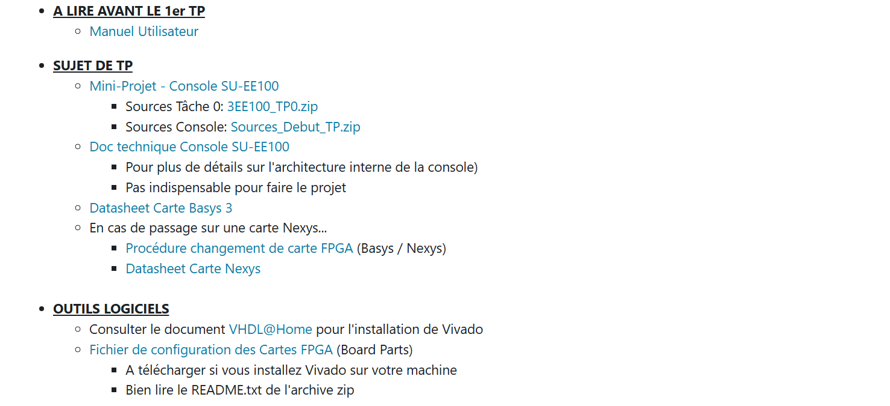
▶ Voir la vidéo (Google Drive)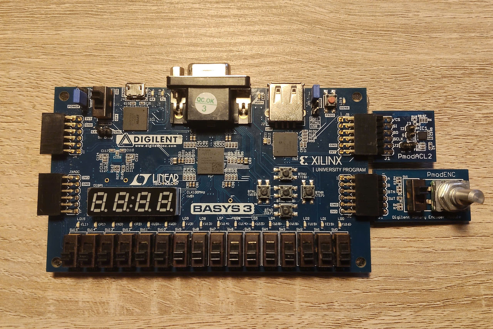
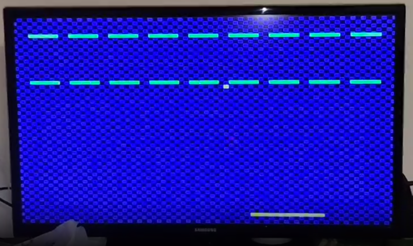